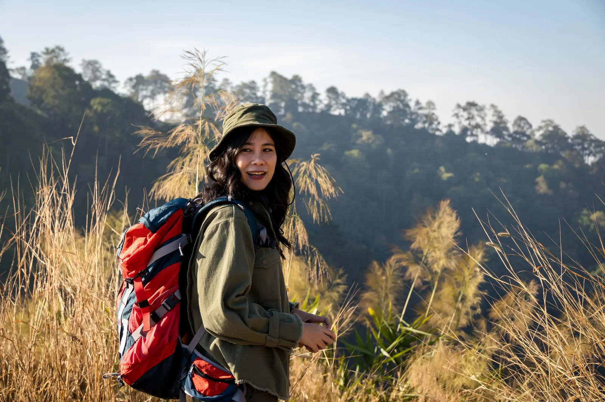

Which Trek in India Is Right for You?
Tell us when you can go, how many days you have and how hard you want it. We pick treks from the Treqz atlas whose sources call that month a good one.
Free. No sign-up. Runs in your browser, nothing is saved.

How this works.
Each trek in the atlas lists the months its sources call best and possible. We keep treks that fit your days and level, rank "best month" ahead of "possible month", and then show easier and shorter treks first. Difficulty grades come from each trek's own cited sources, so check the trek page for permits, cost and gear before you plan.
Fly the trek before you walk it.
Every trek in the atlas is rebuilt in 3D from real terrain. Open a result and fly the route camp by camp.
Quick questions.
How are the treks ranked?
Treks whose sources call your month one of the best come first, then treks where it is only possible. Within each group, easier and shorter treks come first.
Why do I see no treks?
Try more days or a harder level. A few months, such as peak monsoon, have few good options.
Does this replace the trek page?
No. Open a result for the day-by-day plan, cost, permits and operators, each linked to its source.
More free tools.
5 km running plan
Make a 6 to 10 week plan that takes you from your first run to 5 km. Print it or save it as a PDF.
Running pace calculator
Enter a distance and a time to get your pace per km, your speed, and estimated 5K, 10K, half and full marathon times.
Run club name generator
Get name ideas for your running group: fun, calm or women-only, with your city in the name if you like.